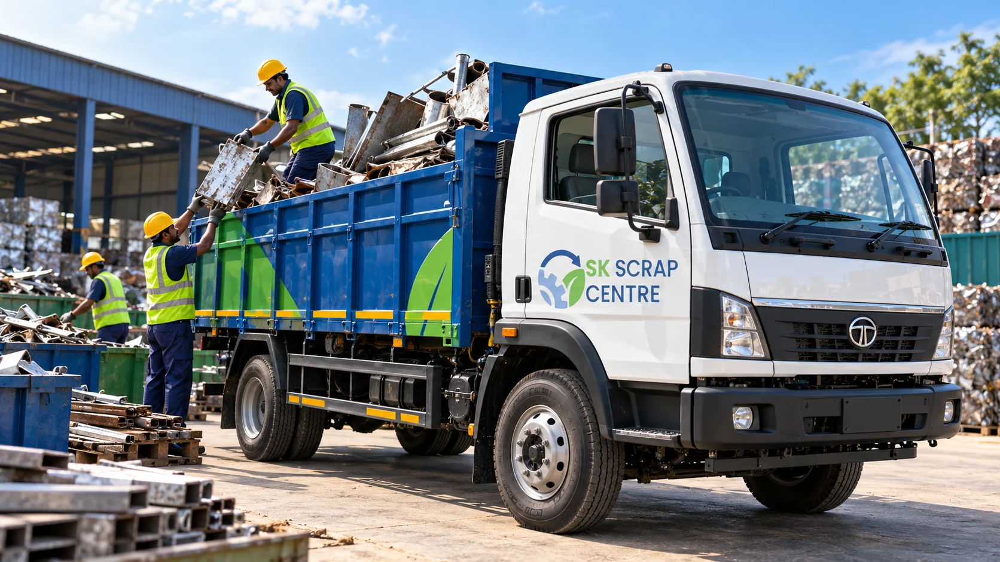
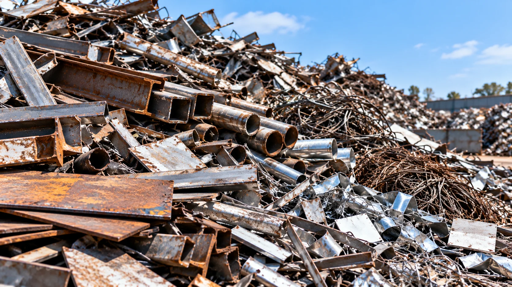
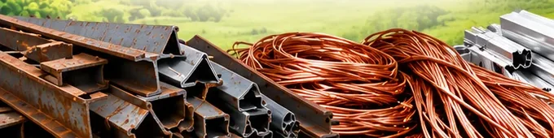
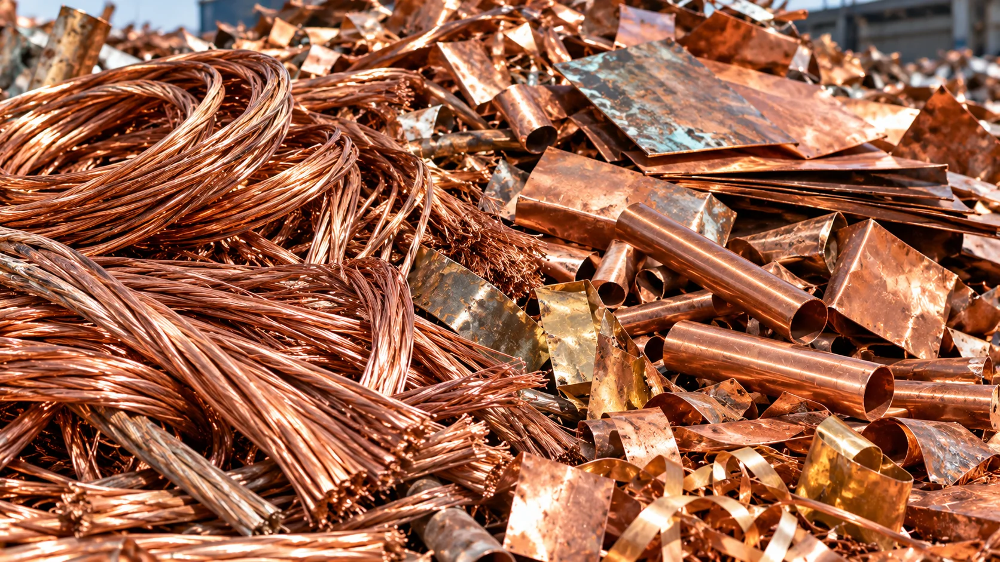
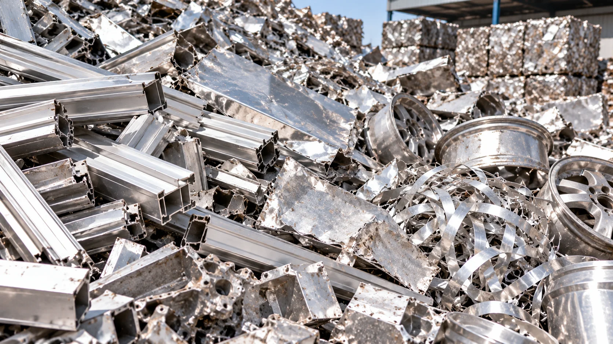
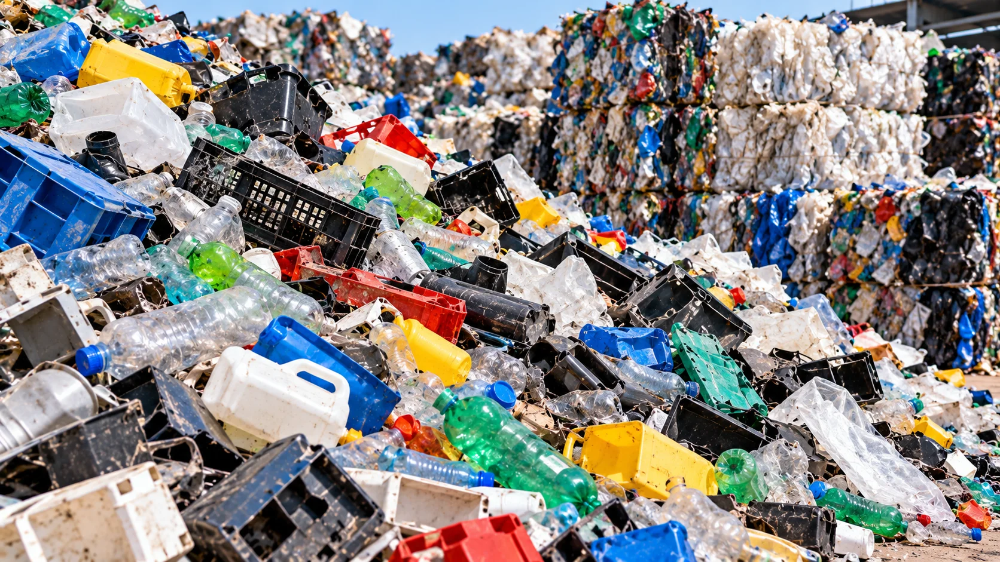
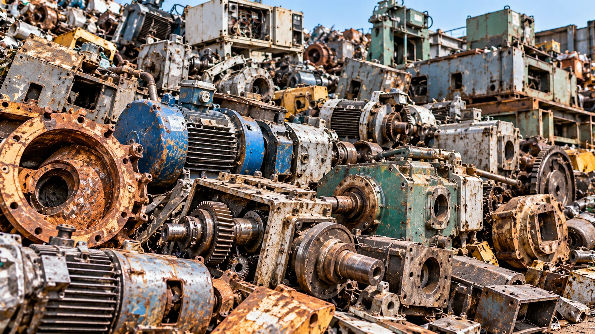
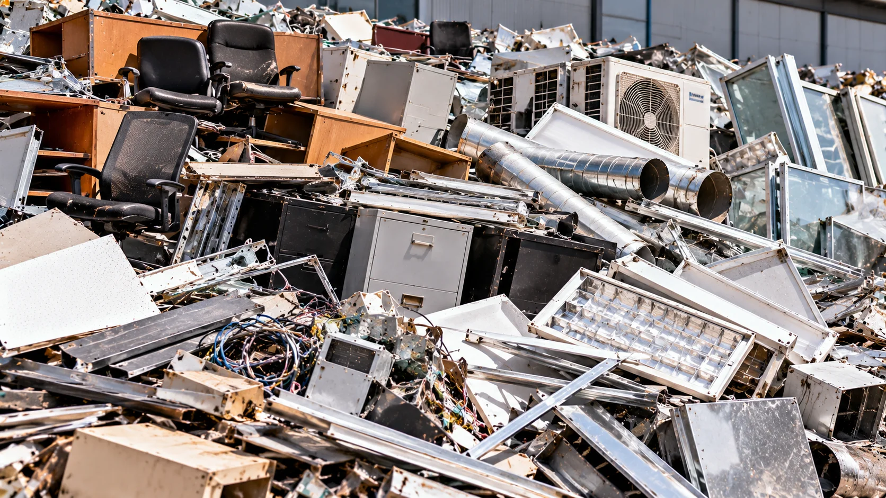
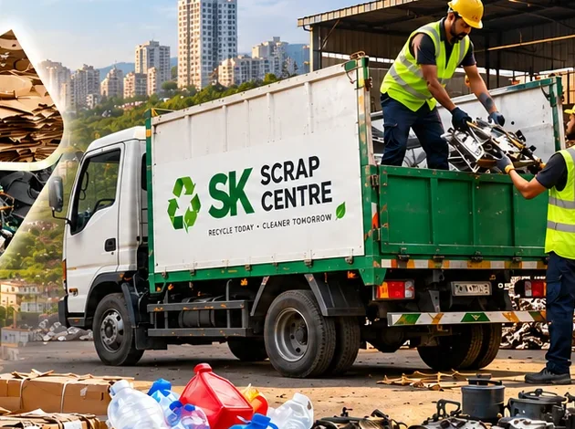

Contact Our Team
Tell us what type of scrap you have and where it is located.
Sell metal, copper, aluminium, e-waste, plastic, paper and industrial scrap with a local team focused on fair evaluation, convenient collection and responsible recycling.
One convenient contact for scrap collection and recycling enquiries across Pune.
Explore our scrap services in Pune. Choose a category to learn more or contact us to discuss your material.

Scrap buying enquiries for homes, shops, offices and businesses.
Explore service
Metal scrap buying enquiries for assorted recyclable metals.
Explore service
Collection enquiries for steel sections, iron and metal offcuts.
Explore service
Copper wire and copper scrap evaluation enquiries.
Explore service
Aluminium sections, sheets and other recyclable material.
Explore service
Enquire about collection of electronic scrap and e-waste.
Explore service
Plastic scrap collection enquiries for reusable material.
Explore service
Paper, cartons and cardboard recycling enquiries.
Explore service
Scrap enquiries for workshops, factories and industrial sites.
Explore service
Enquire about redundant machinery and equipment scrap.
Explore service
Collection enquiries for offices, shops and commercial premises.
Explore serviceAsk about convenient scrap pickup for your location in Pune.
Request pickupSK Scrap Center supports scrap buying, recycling and collection enquiries for residential, commercial and industrial customers in Pune and Pimpri-Chinchwad. We help customers identify the right service for their scrap and coordinate the next steps with a focus on clear communication and responsible material handling.
From metal and copper to electronic scrap, plastic, paper and machinery, our aim is to make scrap disposal simpler while encouraging material recovery and recycling.
Four simple steps to help you get started with scrap selling or pickup.
Tell us what type of scrap you have and where it is located.
Share material details, approximate quantity and photos if available.
Confirm the service, timing and pickup details with our team.
Suitable materials can be sorted for reuse or responsible recycling.
Examples of recyclable materials and scrap categories we handle enquiries for.

A practical, customer-focused approach to scrap buying and recycling enquiries in Pune.
Talk through your material and quantity before confirming a transaction.
Ask about collection options for your location and type of scrap.
Clear next steps and straightforward communication from enquiry onward.
Support reuse and material recovery wherever suitable.
Share your requirements and coordinate a suitable time with our team.
Local enquiries from Pune and Pimpri-Chinchwad are welcome.
Tell us what you have. We’ll help you understand the next step for scrap buying or pickup.
You can contact SK Scrap Center about metal, iron and steel, copper, aluminium, electronic scrap, plastic, paper and cardboard, industrial, machinery and commercial scrap.
Pickup enquiries are welcome for Pune and Pimpri-Chinchwad. Contact us with your location, scrap category and approximate quantity to discuss availability.
Call or WhatsApp with the material type, approximate quantity and clear photos if possible. Final pricing depends on the material, quality, quantity and current market conditions.
Yes, businesses, offices, workshops and factories can contact us about commercial and industrial scrap collection requirements.